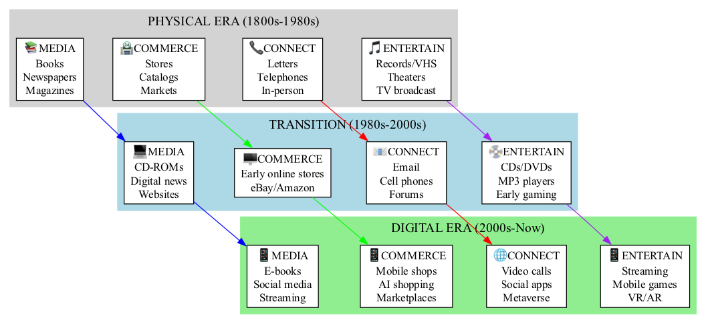
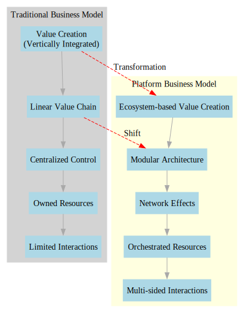
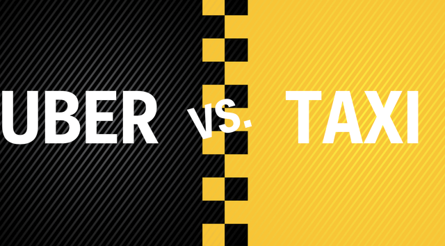
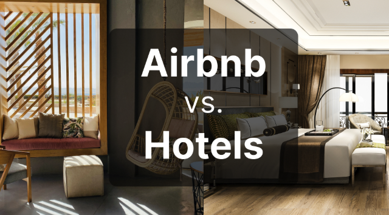

Platform Strategy
Kate Wang - Penn State University
Evolution of Business Models
Modularity and Platform
Ecosystem-Based Value Creation
- Ecosystem-based value creation occurs when a platform enables and extends the value creation of its users, producers, and complementary components.
- It leverages the collective capabilities of the ecosystem to create new and innovative products, services, and experiences.
- Platforms that facilitate and extend the value creation of their ecosystem components are often referred to as modular platforms.
- A modular platform is built on a modular architecture, allowing for independent development and innovation of complementary components.
- By enabling the value creation of its ecosystem components, modular platforms can create a powerful competitive advantage through network effects.
- Network effects occur when the value of a platform increases as more users and producers join.
- Orchestrating resources occurs when a platform coordinates and manages the resources of its ecosystem components.
- Multi-sided interactions occur when a platform coordinates and manages the interactions between its ecosystem components.
Network Effects
Orchestrating Resources
Multi-sided interactions
Discussion: Pros and Cons of Platforms
Uber vs. Taxi
Airbnb vs. Hotel
YouTube vs. Hulu
Zillow vs. Realtors
Uber vs. Taxi Comparison
Uber
- Higher revenue for drivers
- Lower opportunity cost vs traditional taxis
- Lower transaction costs for drivers & passengers
- More flexible scheduling
- Ride-sharing in restrictive licensing areas
- Drivers choose their own schedules
Taxis
- Strong brand recognition
- More traditional service model
- Higher minimum fare structure
- More regulated industry
- Established infrastructure
- Higher safety standards
Airbnb vs. Hotel Comparison
Airbnb
- Access to unique and authentic accommodations
- More flexible pricing and availability
- Ability to host unique experiences
- Lower upfront costs for hosts
- Ability to supplement income
- May be more environmentally friendly
Hotels
- Strong brand recognition
- More traditional service model
- Consistent service standards
- Professional hospitality staff
- Established booking systems
- Reliable amenities and services
Zillow vs. Realtors Comparison
Zillow
- Instant property valuations (Zestimate)
- 24/7 online property search access
- Lower transaction costs
- Data-driven market insights
- Direct buyer-seller connections
- Streamlined digital processes
Realtors
- Professional expertise and guidance
- Local market knowledge
- Negotiation skills and experience
- Personal relationship and trust
- Full-service transaction support
- Legal and regulatory compliance
Key Takeaways: Platform Strategy
- Platforms vs. Pipelines: Platforms facilitate interactions and transactions between external producers and consumers, creating value that the platform itself does not own.
- Modularity: Platforms are built on a modular architecture, allowing for independent development and innovation of complementary components.
- Network Effects: The value of a platform increases as more users and producers join, creating a powerful competitive advantage.
- Success depends on managing the ecosystem, not just the product.
- Governance, trust, and rules are critical for a healthy platform.
- Competition shifts from feature vs. feature to ecosystem vs. ecosystem.
Strategic Implications:
In a platform economy, the winner is often the company that builds the most vibrant ecosystem.
Simulation: Amazon Strategic Decisions in 2002